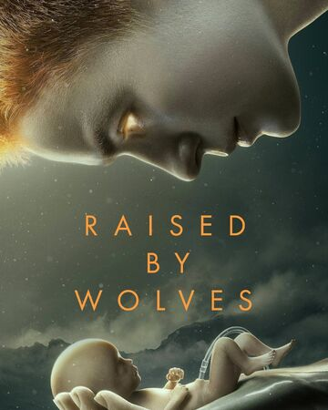

| RAISED BY WOLVES |
Critics Consensus: Bristling with imagination and otherworldly imagery, Raised by Wolves is a bloody exploration of artificial intelligence and religious belief that will stimulate the eye and mind -- if not the heart.
Synopsis: From executive producer Ridley Scott, Raised by Wolves centers on two androids tasked with raising human children on a mysterious... [More]
Starring: Amanda Collin, Abubakar Salim, Winta McGrath, Niamh Algar |
 |
| NOUGHTS |
Critics Consensus: Though handsomely produced and full of charming performances, Noughts + Crosses fails to capture the scope of its source material, leaving little room for nuance in its revisionist history.
Synopsis: Noughts + Crosses follows two young people Sephy and Callum, who are divided by their colour but united by love.... [More]
Starring: Masali Baduza, Jack Rowan, Helen Baxendale, Paterson Joseph
Directed By: Julian Holmes |
|
| WESTWORLD |
Critics Consensus: Westworld successfully reboots itself by broadening its scope while tightening its storytelling clarity -- although some may feel that the soul has been stripped from this machine in the process.
Synopsis: The third season of the drama series starts about three months after the ending of Season 2. Dolores (Evan Rachel... [More]
Starring: Evan Rachel Wood, Anthony Hopkins, Thandie Newton, Jeffrey Wright
Directed By: Anna Foerster, Jennifer Getzinger, Helen Shaver, Amanda Marsalis/td>
|  |